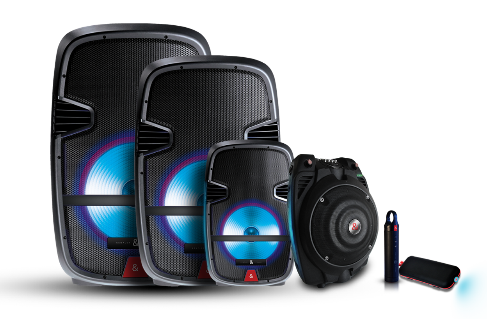

Categorias
Computadora, laptop, audifonos bluetooth, reloj inteligente, smartwatch, mouse, relojes, bocinas... y mas. Un post por cada uno.

Este tipo de Bocina, por su gran tamaño, en comparacion con altavoces o bocinas pequeñas, tienen un fin mucho menos personal como si lo tienen las antes mencionadas, pues suenan mucho mas fuerte y son ante todo un amplificador de playlists almacenados en algun dispositivo o memoria externa (SD, USB o Disco externo).
¿Que considerar, a grandes razgos, para comprar una?, empezando por considerar el proposito de estos altavoces, pues su proposito es para fiestas e incluso uso profesional para ambientar algun negocio o atraer gente, si es para hacerte publicidad o haces eventos regularmente comprar una es una inversion redituable, pues es mucho mas economico que alquilar a un ambientador que lleve su equipo, ademas de una calidad de audio igual o superior; tambien el número de bocinas del sistema, pues pueden ser relevantes en lo fuerte que puede sonar. Un altavoz es la unidad completa, el cajon es la estructura de plastico o madera, y las bocinas son las que producen el sonido y que superficialmente se aprecian como circulos desde afuera, usualmente vienen una o 2 por cajon; La marca, pues las mejores marcas invierten mas en su calidad y suelen incluir mas tecnologia en sus productos. La potencia y calidad de audio dependen de la calidad y tamaño de sus componentes internos, tamaño de imanes de cada bocina, grosor y tipo de cables, tamaño de cajon, asi como los materiales son determinantes; importante ver en la descripcion del producto la proteccion que tiene contra elementos del ambinete, que tan hermetica es polvo, liquidos y otros factores ambientales; por ultimo, ver en la descripcion que puertos tiene, que tecnologias para conectarse tiene y versiones de bluetooth para vincularse, asi tambien como si tiene radio incluido o soporta SD u USB. Por su diseño y usos mas comunes suelen usarse con conexion directa a una fuente de Luz.
Computadora, laptop, audifonos bluetooth, reloj inteligente, smartwatch, mouse, relojes, bocinas... y mas. Un post por cada uno.